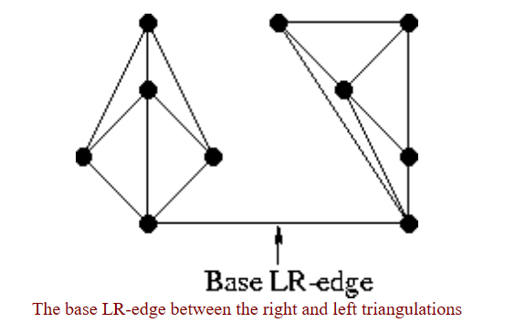
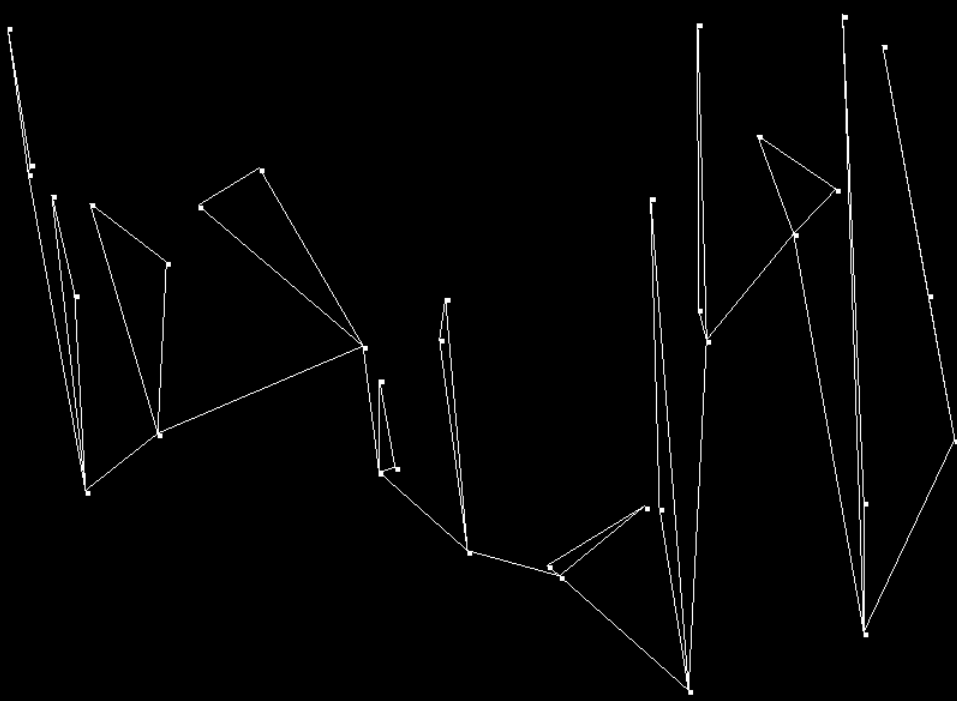
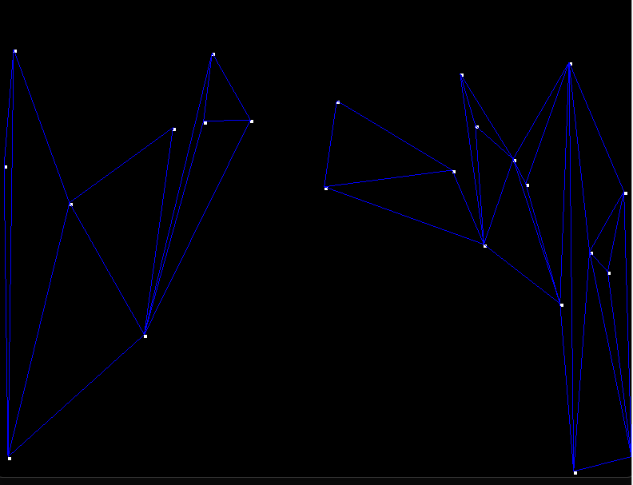
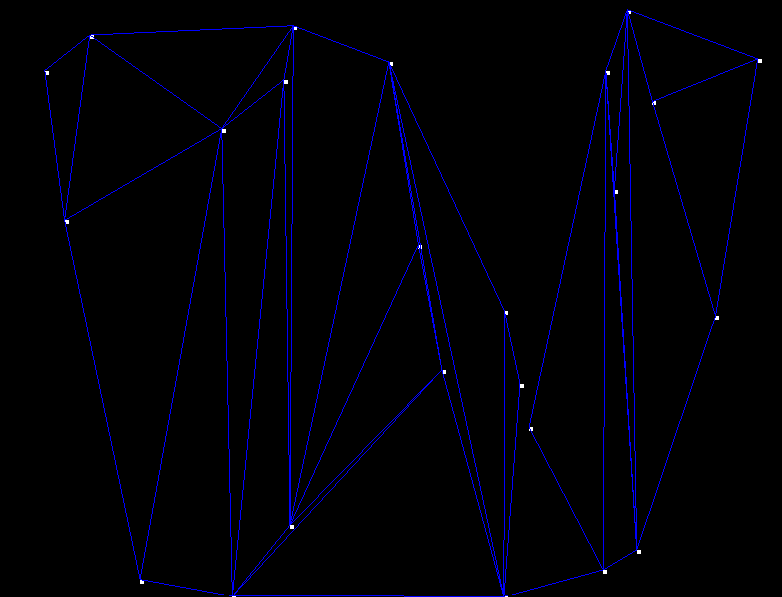

Delaunay Triangulation
with Divide and Conquer
A tessellation or tiling is the covering of a surface, often a plane, using one or more geometric shapes, called tiles, with no overlaps and no gaps. In geometry, a triangulation is a subdivision of a planar object into triangles.
Delaunay triangulation is widely used mesh-building technique that creates triangles with the given set of points. In Delaunay principle, no point in the plane is in the circumcircle of any triangle in delaunay triangulation. There are several algorithms for computing delaunay triangulation and already MATLAB and Scipy library packages can be seen.
The most popular algorithm for Delaunay Triangulation is Bowyer–Watson algorithm which repeatedly adds a vertex, split into a triangle and then flip one edge. Although the divide and conquer method for Delaunay Triangulation was developed by Guibas and Stolfi in 1985, and its algorithm mostly exists in article and in lengthy explanation but its actual implementation in code cannot be easily seen. I initiatively programmed delaunay triangulation using divide and conquer method with C++ languagage purely on my own, and I am going to explain the procedure in this essay..
Implementation Details
Slicing the points
First, the given set of points are successively divided into halves until each partition has 2 or 3 points, and edges are drawn between 2 or 3 points.
Merging
Drawing Base LR Edges
The first step for merging the two halves is to insert the base LR-edge. The base LR-edge is the bottom-most LR-edge which does not intersect any LL or RR-edges. If the base LR Edge does not intersect any existing edges, the base LR edge is added to the edges set.
-
Choosing Potential candidates and Deleting Edges
The potential candidates of both right side and left side are checked if they meet the two criteria:
- The clockwise angle from the base LR-edge to the potential candidate must be less than 180 degrees
- The circumcircle defined by the two endpoints of the base LR-edge and the potential candidate must not contain the next potential candidate in its interior.
If second criteria does not hold: the edges in the right section that has the end point of base LR edge is deleted.If both criteria are satisfied, the potential candidate becomes our final candidate for the right side.
template< typename T > const std::vector< std::pair<std::pair<T, T >, std::pair<T, T> >> delaunay<T>::potentials(std::vector<Vector2<T>>& vertices1, std::vector<Vector2<T>>& vertices2, std::pair<T, T> np1, std::pair<T, T> np2, bool isStart, int depth) { ... /****************** RR edge *************************/ T start = 0; T angle = 0; std::vector<Vector2<double>>::iterator it; std::vector<Vector2<double>> Right_klist; bool isright = false; int rcount = 0; for (auto& k : vertices2) { start++; std::pair<T, T> p3 = { k.x, k.y }; double dot = k.x * (p2.x) + k.y * p2.y; double ma = sqrt(k.norm2()); double mb = sqrt(p2.norm2()); angle = acos(dot / (ma * mb)); angle = angle * 180 / 3.1415; if (angle > 0 && angle < 180) { const TriangleType t = TriangleType{ p1, p2, k }; int c = 0; for (it = vertices2.begin() + start; it != vertices2.end(); it++) { if (t.circumCircleContains(*it)) { _edges.erase(std::remove_if(begin(_edges), end(_edges), [np2, p3] (std::pair<std::pair<T, T>, std::pair<T, T> >& j) { return containstwoPoints(j, np2, p3); }), end(_edges)); break; } else { c++; } } if (c == (vertices2.size() - start)) { // potential is submitted isright = true; Right_klist.push_back(k); rcount++; } } } ///****************** LL edge *************************/ start = 0; bool isleft = false; int lcount = 0; std::vector<Vector2<double>> Left_klist; for (auto& k : vertices1) { start++; std::pair<T, T> p3 = { k.x, k.y }; double dot = k.x * (p1.x) + k.y * p1.y; double ma = sqrt(k.norm2()); double mb = sqrt(p1.norm2()); angle = acos(dot / (ma * mb)); angle = angle * 180 / 3.1415; if (angle > 0 && angle < 180) { const TriangleType t = TriangleType{ p1, p2, k }; int c = 0; for (it = vertices1.begin() + start; it != vertices1.end(); it++) { if (t.circumCircleContains(*it)) { _edges.erase(std::remove_if(begin(_edges), end(_edges), [np1, p3] (std::pair<std::pair


Creating new LR Edges
The new LR edges are added after adding base LR edges following the same procedure as the base LR edge and following procedures are repeated.
- When neither a right nor a left candidate is submitted, the merge is complete.
- If only one candidate is submitted, it automatically defines the LR-edge to be added.
- When both candidates are submitted, if the right candidate is not contained in interior of the circle defined by the two endpoints of the base LR-edge and the left candidate, then the left candidate defines the LR-edge and vice-versa.
if (depth != vertices1.size()) { if (isleft == true && isright == false) { std::sort(Left_klist.begin(), Left_klist.end(), [](Vector2<T> a, Vector2<T> b) { return a.x > b.x; }); for (auto& a : Left_klist) { const std::pair<T, T> new_pair1 = { a.x, a.y }; const std::pair<T, T> new_pair2 = { vertices2[0].x, vertices2[0].y }; if (delaunay_intersect(new_pair1, new_pair2)) { _edges.push_back({ new_pair1, new_pair2 }); potentials(vertices1, vertices2, new_pair1, new_pair2, false, depth + 1); } } return _edges; } else if (isleft == false && isright == true) { std::sort(Right_klist.begin(), Right_klist.end(), [](Vector2<T> a, Vector2<T> b) { return a.x < b.x; }); for (auto& a : Right_klist) { const std::pair<T, T> new_pair1 = { vertices1[0].x, vertices1[0].y }; const std::pair<T, T> new_pair2 = { a.x, a.y }; if (delaunay_intersect(new_pair1, new_pair2)) { _edges.push_back({ new_pair1, new_pair2 }); potentials(vertices1, vertices2, new_pair1, new_pair2, false, depth + 1); } } } else if (isleft == true && isright == true) { std::sort(Left_klist.begin(), Left_klist.end(), [](Vector2<T> a, Vector2<T> b) { return a.x > b.x; }); std::sort(Right_klist.begin(), Right_klist.end(), [](Vector2<T> a, Vector2<T> b) { return a.x < b.x; }); const TriangleType t = TriangleType{ p1, p2, Left_klist[0] }; if (!t.circumCircleContains(Right_klist[0])) { std::sort(Right_klist.begin(), Right_klist.end(), [](Vector2<T> a, Vector2<T> b) { return a.x < b.x; }); for (auto& a : Right_klist) { const std::pair<T, T> new_pair1 = { vertices1[0].x, vertices1[0].y }; const std::pair<T, T> new_pair2 = { a.x, a.y }; if (delaunay_intersect(new_pair1, new_pair2)) { _edges.push_back({ new_pair1, new_pair2 }); potentials(vertices1, vertices2, new_pair1, new_pair2, false, depth + 1); } } } else { std::sort(Left_klist.begin(), Left_klist.end(), [](Vector2<T> a, Vector2<T> b) { return a.x > b.x; }); std::sort(Right_klist.begin(), Right_klist.end(), [](Vector2<T> a, Vector2<T> b) { return a.x < b.x; }); const TriangleType t = TriangleType{ p1, p2, Right_klist[0] }; if (!t.circumCircleContains(Left_klist[0])) { for (auto& a : Left_klist) { const std::pair<T, T> new_pair1 = { a.x, a.y }; const std::pair<T, T> new_pair2 = { vertices2[0].x, vertices2[0].y }; if (delaunay_intersect(new_pair1, new_pair2)) { _edges.push_back({ new_pair1, new_pair2 }); potentials(vertices1, vertices2, new_pair1, new_pair2, false, depth + 1); } } } return _edges; } } } else { return _edges; }
Result
References
- http://www.geom.uiuc.edu/~samuelp/del_project.html#acknowledgments
- https://github.com/bl4ckb0ne/delaunay-triangulation